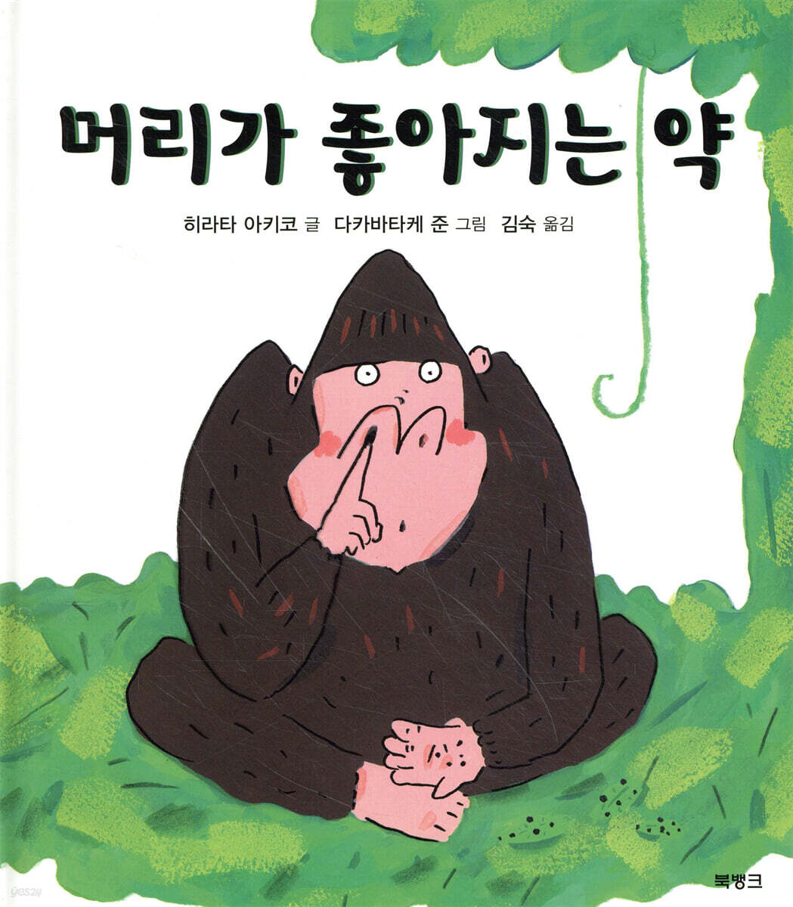

iq 150이하는 인간취급 못받는다거나..

iq 150이하는 인간취급 못받는다거나..
애더럴?
체스 잘하는 약 ㄷㄷㄷ
멘타츠?
덴마 에피소드 생각나네. 야엘로드
아이큐는 정규분포라서 이제 약안먹는 애들이 100(중간값)이하로 측정될 뿐이야.
한국은 교육수준이 높아서 중간값이 108정도 된다함.
아이큐가 교육으로 상승 가능?
충분히 가능
현재 아이큐 가장 높은 사람이 아이큐관련 공부해서 올리고 있는걸로 방송에 나왔음
아이큐 측정 방식이 보통 추론 이해 이런 문제 푸는거라서 그런 문제들에 익숙해지면 올라감
그래서 아이큐 측정 문제가 유출되면 신뢰도 떨어진다고 하는거고 멘사쪽이 말이 많던거임 시험 여러번 칠 수 있으니까
실제 아이큐는 변동이 없는거긴 한데 결과적으로 측정 되는 아이큐가 변하긴 하는거니까
이론이 그렇지 실제론 처음만들때기준으로부터 올라감
이거 완전 영화 리미트리스
나 아이큐 127인데 주위에서 나보다 높은사람 거의못봄 근데 인터넷만 오면 평균이 130정도인듯
그리고 난 내가 아이큐 높은데 하는짓 보면 왤캐 멍청하지 생각자주들어
난 초등학생 때 쟀던걸로 145인데 24 기준일거 같아서 15로 하면 너랑 비슷할듯
근데 살다보면 엄청 애매하지 않냐? 좋다는 게 체감은 되는데 대학가서 아예 머리만 갖고 먹고살 수 있는 애들 만나면 벽느껴짐
국내 초등학교 검사 기준이 15일거임
초딩 때 한거는 근데 업체도 야매일수 있고
문제도 일부분만 낸거라 그냥 돈 내고 웩슬러 받는게 훨 정확하긴 함
아이큐 테스트 열풍일 때 야매 업체도 있고, 야매 영재 기관도 있고 그랬다는데
학교에서 학년 전체 했던거라서 검사 자체가 야매는 아닐 것 같은데, 30 넘은 이제 와서 무슨 의미가 있을까 싶음 ㅋㅋ 막 대단한 일 하고있는 것도 아니고
그 머래야하지
검사지가 공신력 없는거 쓴곳도 있고
기관이 불분명한 케이스도 있었음
그 때가 국내외를 막론하고 혈액형 성격설 같은 유사과학이 공공연하게 믿던 시기라
아이큐 테스트는 아는데 그게 어떤 문항으로 이뤄져야하는지 모르는 경우도 있고 그렇다더라
유튜브에서 대학교수가 아이큐 테스트 관련 말한 영상에서 봤었음
내가 185인데 이 개붕이말이 맞는거같다
아이큐 높은사람들은 다들 그렇게 생각한데
확실히 아이큐 높은 애들은 커뮤에서 이따위로 무의미하게 시간낭비 하진 않겠지
다 똑똑해지면 안된다규
근데 지능이랑 지혜랑 좀 달라서 머리 좋다고 투자 잘하고 그렇진 않더라 저런 약 나와도 지금이랑 크게 다르지 않을듯
어차피 의대가고 이런거 다 상대평가라서 저거 먹는다고 의대가고 그런건 아닐테니까
뉴턴: ㅇㅈ함
인류사 천재 두손가락 안에 드는 뉴턴은 주식하다 조져봤다. 7년만에 복구 했다곤 하지만 ㅋㅋㅋ 그리고 모쏠이었다.
뉴턴은 지독한 여혐이라...
마티즈에 자연흡기 V8엔진 달아도 잘 안나간다는 말이군
이게 멋진 신세계 아님?
콘서타 복용하면 영구적은 아니어도 몇달간 머리 팽팽하게 돌아가긴함. 고양감이라고 그걸 지칭하는 단어도 있음. 다만 내성생기기 시작하면 총명함이 사라짐
저거 먹고 부작용으로 좀비됨
멋진 신세계 되는거지


아이큐테스트는 보통 쉽게 접하는것들은 측정자기분좋으라고 높게나옴
그리고 아이큐랑 삶은 보통 비례하지 않음 인간이 되야지
아이큐가높으면 그 아이큐를 어떻게 하면 공부안할까 잔머리굴리는데 쓰이는거임 일도 가라의신이 되는거고
김숙이 그 김숙임?
키, iq, 꽈츄 셋둥에 하나 185 해준다면 뭐 고름?
꽈튜지
??? : 넌 그걸 맞아놓고도 생각하는 수준이 고작 그거야?
저거 스토리가 지 코딱지 파고 얘들아 이거 머리 좋아지는 약이거든? 다들 먹어봐 해서 다른 동물들이 고릴라 코딱지 나눠먹는 얘기임ㅋㅋ 나중에 미안 얘들아 구라야ㅠㅠ 갠찬아 하고 해피엔딩
내가 머리가 이미 좋아봐서 아는데 좋다고 별로 달라지는게 없다. 사는건 똑같이 힘들다.
머리가 안 좋아 본 적은 없지 않나?
주변에 안좋은 애들 있잖아
걔로 살아봐야 알지 않나 그 고충은 ㅋㅋ
걍 보면 모르냐? 니 머리가 나쁜건 알겠다.
글쎄 난 머리가 좋아서 꽤 수월하게 살아온 것 같았거든 타인 대비. 네가 어중간한가 봐
가타카 ㄷㄷ
머리좋아지는 약이 있다면 부작용이 무조건 탈모일거같음... 그냥 그럴거 같은
몇 배 이런건 아니지만 유의미하게 머리좋아지는 약이 있기는 함
마약이라서 문제지..